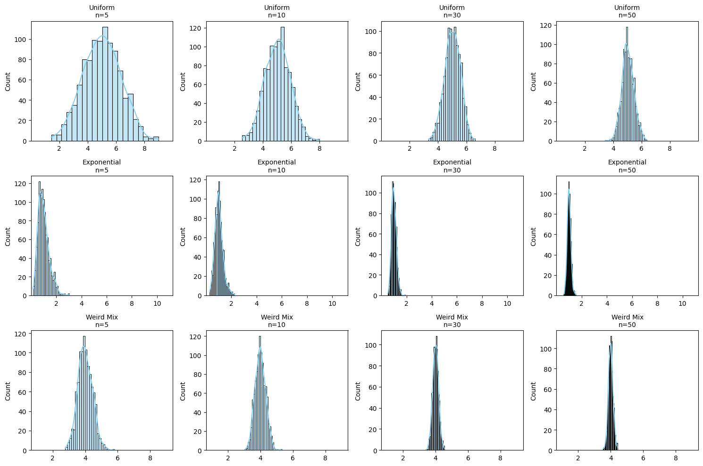

Problem 1
📊 Central Limit Theorem: Visual Magic in Statistics!
🎲 What is CLT?
"No matter how weird your data looks, average enough of it → becomes normal!"
✅ Works for ANY distribution (uniform, exponential, even weird shapes!)
✅ Bigger samples = More perfect bell curve
💻 Let's Simulate It! (Python Code)
import numpy as np
import matplotlib.pyplot as plt
import seaborn as sns
# Set up 3 crazy different distributions
distributions = {
"Uniform": np.random.uniform(0, 10, 100000), # Flat like a table
"Exponential": np.random.exponential(1, 100000), # Skewed like a slide
"Weird Mix": 0.5*np.random.normal(5,1,100000) + 0.5*np.random.poisson(3,100000) # Frankenstein data!
}
# Sampling settings
sample_sizes = [5, 10, 30, 50] # Try different sizes!
n_samples = 1000 # Number of sample means to calculate
plt.figure(figsize=(15,10))
for i, (name, population) in enumerate(distributions.items()):
for j, n in enumerate(sample_sizes):
# Calculate 1000 sample means
sample_means = [np.mean(np.random.choice(population, n)) for _ in range(n_samples)]
# Plot
plt.subplot(3, 4, i*4 + j + 1)
sns.histplot(sample_means, kde=True, color='skyblue')
plt.title(f"{name}\nn={n}", fontsize=10)
plt.xlim(min(population), max(population))
plt.tight_layout()
plt.show()
🔍 What You'll Discover

1️⃣ Small Samples (n=5)
- Histogram looks wild → Still resembles original shape
- Example: Exponential stays lopsided
2️⃣ Medium Samples (n=30)
- Starts looking smoother → Baby bell curve forming!
3️⃣ Large Samples (n=50+)
- Perfect normal distribution → Magic of CLT! 🎩✨
- Even for "Weird Mix" data!
🌎 Real-World Superpowers
| Application | How CLT Saves the Day |
|---|---|
| Elections 🗳️ | Predict winner from small polls accurately |
| Drug Trials 💊 | Prove medicine works despite individual differences |
| Quality Control 🏭 | Detect faulty machines from sample testing |
🎮 Play With These Settings!
# TRY THESE TWEAKS:
sample_sizes = [2, 10, 50, 100] # Watch how tiny samples struggle!
n_samples = 5000 # More means = smoother curves
💡 Golden Insights
- Sample size >30 → Usually good enough for normality
- Skewed original data? → Needs bigger samples to "normalize"
- CLT explains why averages are everywhere (test scores, heights, etc.)
🚀 Next-Level Exploration
- Add "Crazy Distribution" → Like two humps (bimodal)
- Test tiny samples (n=2) → See CLT fail dramatically
- Plot standard deviation → Shows shrinking spread with bigger n
Run this in Jupyter Notebook to interactively play!
"The CLT is why statisticians sleep well at night." 😴📈